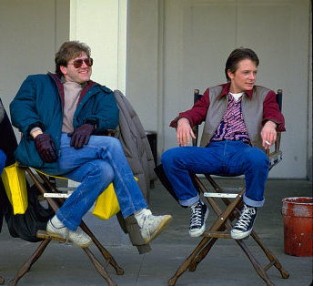

Robert Zemeckis
Robert Lee Zemeckis (Chicago, 14 de mayo de 1952)[1] es un director, productor y guionista estadounidense de cine. En 1984, alcanzó popularidad con su primera película destacada, Romancing the Stone, donde se narra una aventura de una pareja por Colombia. Un año más tarde le llegó el reconocimiento universal y la crítica fue muy favorable con su película de ciencia ficción Back to the Future.
Sus primeras películas se han enfocado sobre todo en los efectos especiales en lugar de la trama o el desarrollo de los personajes. El estilo de Zemeckis sigue la línea del director Steven Spielberg, quien produjo muchas de sus películas, incluida Volver al Futuro.
